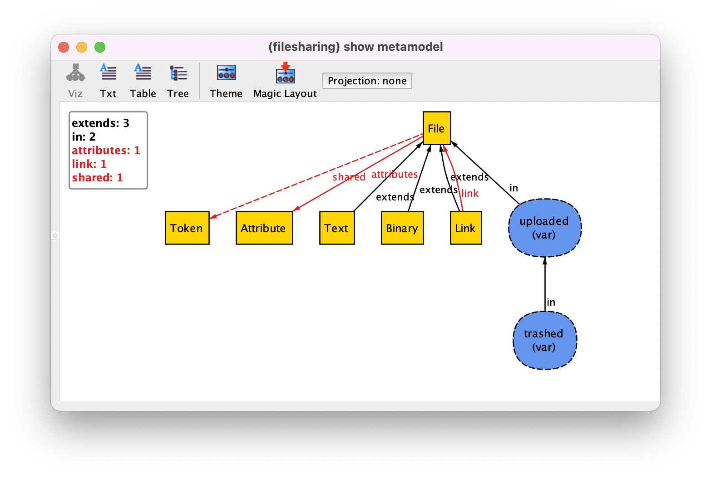

Meta-capabilities¶
Although it is not a very well known feature, Alloy has some basic meta-capabilities that allow to manipulate signatures and fields at the meta-level. This is an advanced feature that can sometimes ease the encoding of certain constraints and even promote maintainability by avoiding updating constraints as the model evolves.
The Alloy meta-model¶
Let us get back to the file sharing example from the Behavioral modeling chapter, but extend its configuration slightly to better exemplify the Alloy’s meta-capabilities. In particular, let us also add some abstract attributes to files, introduce different types of files as (static) extension sub-signatures of File, and say that links point to other files. This will result in the following static declarations.
sig Token {}
sig Attribute {}
sig File {
attributes : set Attribute,
var shared : set Token
}
sig Text, Binary extends File {}
sig Link extends File {
link : one File
}
A (simplified version of the) Alloy meta-model comprises the signatures and fields declared in a model, along with some of their properties. The Analyzer actually provides an option to inspect this meta-model through menu option (or shortcut cmd-m). Below is the result for this version of the file sharing model.
{kind=link}
Top-level signatures and extension signatures are shown as yellow squares, while subset signatures are shown as blue ellipses. The signature hierarchy is shown with black edges for extension (extends) and subset (in) signatures. Red edges denote the fields, which in this model are all binary. Mutable elements are drawn with dashed lines.
Alloy provides a few meta-signatures that capture these elements of the meta-model. These are all identified by a $ suffix. The two essential ones are sig$ – which contains an atom identifying every signature declared in the model – and field$ – which contains an atom identifying every field declared in the model. By default, these meta-signatures are not created for every Alloy model to avoid cluttering, but only if any meta-signature is referred in the model. So let us activate the meta-capabilities of Alloy by simply writing the following command, which is trivially true in non-empty models:
run some_sig {
some sig$
} for 2
Meta-signature sig$ contains a meta-atom identifying each signature of the
model, so this property is trivially true in our model where there are various
signatures declared. Nonetheless, this activates the meta-capabilities and
introduces meta-signatures in the instance which we can inspect in the
evaluator.
Let us open an instance returned by the Analyzer and open the evaluator by
pressing Evaluator. Then let us ask for the value of meta-signature
sig$. You’ll get the following set of meta-atoms.
|
|
|
|
|
|
|
|
As you can see, there is one meta-atom for each of the signatures declared in the model (also identified by a $ suffix), including extension and subset signatures. The value of meta-signature field$ returns instead the meta-atoms representing the fields for all signatures declared in the model.
|
|
|
You can refer directly to these meta-atoms in the evaluator, and actually, unlike regular atoms, you can also mention them in directly in the model. (Notice that a signature meta-atom always ends in $, such as File$, while the respective regular atoms end with $ followed by an identifier, such as File$0 and File$1). Additionally, Alloy also provides subsets of meta-atoms to distinguish between the static and mutable elements of the model. Namely, meta-subset static$ returns all static signatures and fields, and meta-subset var$ all mutable signatures and fields.
Each meta-signature has a few meta-fields defined that allow us to navigate over the structure of the model. These are parent, to get the parent signature of a sub-signature, fields, to get all the fields of a signature, and subfields, to get all fields declared by a signature or one of its sub-signatures. Due to the Alloy type system, you won’t be able to call these meta-fields directly on the evaluator since it won’t be able to disambiguate between the instances for each signature. But you can call it for a particular meta-atom, such as File$ <: fields. In this case, as expected, you’ll get the following tuples.
|
|
Finally, and most importantly, a value meta-field is provided for each
meta-atom that retrieves its valuation in a particular instance. The figure
below depicts this process for a particular instance resulting from the command
presented above, namely the value of the signature File by calling
value over the corresponding meta-atom (which is the same as just
calling File directly).
Specifying meta-constraints¶
Given the available meta-model, let us now explore how it can be used to ease the writing of certain (meta-)constraints. For instance, let’s say that we just want to see scenarios where all signatures of the configuration are not empty. This can be achieved with the following command.
run no_empty_config_sigs {
all s : sig$ & static$ | some s.value
}
Notice that, for now, we are restricting the signature quantification to those that are static. This command will have the intended behavior regardless of the model and the declared signatures, making it resilient to model evolution.
As another example, we may want to see scenarios where the fields of a particular signature are not empty. As said above, we can refer to specific meta-atoms in the model, so we could just write the following command.
run no_empty_file_fields {
all f : File$.subfields & static$ | some f.value
}
This will only generate instances where there are necessarily some attributes
and links assigned (since we called subfields on meta-atom
File$, it also retrieves field link from links).
Perhaps more interesting is using the meta-signatures in the context of behavioral modelling. For instance, it is very often the case that there is a fact in the model restricting all declared mutable signatures and fields to be empty in the first state. That is also the case in the file sharing example. Using meta-signatures, this fact could be trivially written for any model as follows, forcing all mutable elements to be empty in the first state.
fact init {
// Initially all mutable elements are empty
all v : var$ | no v.value
}
This strategy is also useful to write stuttering predicates which are common in behavioral models, as is the case in the file sharing example. Using meta-signatures, the stuttering predicate could just be rewritten as follows, stating that the value of all mutable elements remain unchanged between the current and the next state.
pred stutter {
all v : var$ | v.value = v.value' // no effect on anything
}
A similar strategy could be used to encode frame conditions on event predicates, namely iterating over all mutable fields that are not relevant for the event and force them to remain unchanged. In the file sharing model, we could, for instance, re-encode the upload event as follows.
pred upload [f : File] {
f not in uploaded // guard
uploaded' = uploaded + f // effect on uploaded
all v : var$ - uploaded$ | v.value = v.value' // no effect on anything other than uploaded
}
This feature can also be used to quickly specify rich scenarios. For instance, let us say we want to see the minimal traces where every element of the model is used at some point. We can just write the following command, that will guarantee that every mutable element is eventually populated. For the file sharing example, this is a trace with 5 states, where a file is uploaded, shared, downloaded, and then deleted.
run everything_happens {
all v : var$ | eventually some v.value
}